The Abjad Container class
The Abjad Container class models the functionality shared by tuplets, measures, voices, staves and all other types of container.
Public interface
Attributes
Read / write attribute inherited from _Component.
Returns LilyPond accidentals style string.
Accepts LilyPond accidentals style string, None.
See example.
Read / write attribute inherited from _Component.
Returns Abjad _BarlineInterface.
Assign a LilyPond barline string, None.
See example.
abjad> container = Container([ ]) abjad> container.brackets ( )
abjad> container.brackets = 'curly'
abjad> container.brackets
{ }
abjad> container = Container([ ])
abjad> container.duration ContainerDurationInterface(0)
Read-only attribute inherited from _Component.
Returns a string of valid LilyPond input.
See example.
abjad> container = Container([ ])
abjad> container.formatter _ContainerFormatter( )
abjad> container = Container(Note(0, (1, 4)) * 4)
abjad> container.leaves [Note(c', 4), Note(c', 4), Note(c', 4), Note(c', 4)]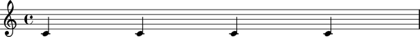
abjad> t = Container([Note(0, (1, 4)), Note(2, (1, 4))]) abjad> u = Container([Note(4, (1, 4)), Note(5, (1, 4))]) abjad> staff = Staff([t, u])
abjad> t.next Note(e', 4)

Read / write attribute defined here.
Returns True when contents of self interpret in parallel, ie, at the same musical time, and False otherwise.
abjad> container = Container([ ])
abjad> container.parallel False
Read-only attribute defined here.
Returns reference to previous-in-container leaf following self.
abjad> t = Container([Note(0, (1, 4)), Note(2, (1, 4))]) abjad> u = Container([Note(4, (1, 4)), Note(5, (1, 4))]) abjad> staff = Staff([t, u])
abjad> u.prev Note(d', 4)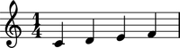
abjad> container = Container([ ])
abjad> container.spanners _ContainerSpannerInterface(0)
Read / write attribute inherited from _Component.
Returns Abjad _TempoInterface.
Accepts Abjad tempo token.
See example.
Methods
abjad> container = Container([Note(0, (1, 4))])
abjad> container.append(Note(2, (1, 4)))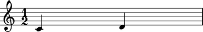
abjad> voice1 = Voice(Note(7, (1, 8)) * 2)
abjad> voice2 = Voice(Note(0, (1, 8)) * 2)
abjad> voice1.invocation.name = 'voice1'
abjad> voice2.invocation.name = 'voice2'
abjad> staff = Staff([voice1, voice2])
abjad> staff.brackets = 'double-angle'
abjad> container = Container([staff, staff.copy()])
abjad> f(container)
\new Staff <<
\context Voice = "voice1" {
c'8
c'8
}
\context Voice = "voice2" {
g'8
g'8
}
>>
\new Staff <<
\context Voice = "voice1" {
c'8
c'8
}
\context Voice = "voice2" {
g'8
g'8
}
>>
abjad> container.coalesce( )
abjad> f(container)
\new Staff <<
\context Voice = "voice1" {
c'8
c'8
c'8
c'8
}
\context Voice = "voice2" {
g'8
g'8
g'8
g'8
}
>>
embed(i, expr)
Public method defined here.
Inserts expr in self at index i.
expr may be either of type _Component or a Python list or Python tuple of type _Component.
Does not fracture spanners; for fracturing insert, use insert( ) instead.
abjad> container = Container(Note(0, (1, 8)) * 4)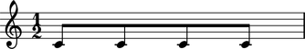
abjad> container.embed(2, Note(2, (1, 8)))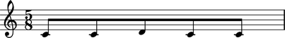
extend(i, expr)
Public method defined here.
Appends the contents of expr to self.
expr may be either a Python list or an Abjad Container.
abjad> t = Container(Note(0, (1, 16)) * 4) abjad> Beam(t)

abjad> u = Container(Note(2, (1, 16)) * 4) abjad> Beam(u)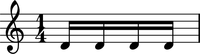
abjad> u = Container(Note(2, (1, 16)) * 4) abjad> Beam(u) abjad> t.extend(u)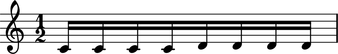
get(name = None, classtype = None)
Public method defined here.
Searches self recursively and returns all score components in self with name equal to name and / or with class name equal to classname.
name will match either an "added attribute" of the type self.name = 'name' or context invocation name of the sort context.invocation.name = 'name'.
abjad> t = Container(Note(0, (1, 16)) * 4) abjad> Beam(t) abjad> t.name = 'first'
abjad> u = Container(Note(2, (1, 16)) * 4) abjad> Beam(u) abjad> u.name = 'second'
abjad> container = Container([t, u])
abjad> container.get('first')
Conatiner(c'16, c'16, c'16, c'16)
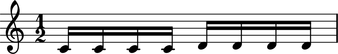
abjad> container = Container([Note(x, (1, 16)) for x in [0, 2, 4, 5]])

abjad> note = container[2]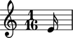
abjad> container.index(note) 2
kind(classname)
Deprecated public method inherited from _Component.
Returns True if classname in class hierarchy of self, otherwise False.
DEPRECATED. Use built-in Python isinstance( ) instead.
insert(i, expr)
Public method defined here.
Inserts expr in self at index i.
expr must be of type _Component.
Fractures spanners; for nonfracturing insert, use embed( ).
abjad> container = Container([Note(x, (1, 16)) for x in [0, 2, 4, 5]])

abjad> note = Note(7, (1, 16))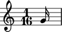
abjad> container.insert(2, note)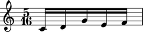
abjad> container = Container([Note(x, (1, 16)) for x in [0, 2, 4, 5]])

abjad> note = container.pop( )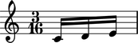
abjad> note
abjad> container = Container([Note(x, (1, 16)) for x in [0, 2, 4, 5]])

abjad> note = container[1]

abjad> container.remove(note)
Overloads
__add__(expr)
Public method defined here.
Return new container equal to the concatenation of self followed by expr.
The operation is noncommutative: the contents of self will be placed before the contents of expr.
abjad> t = Container([Note(x, (1, 16)) for x in [0, 2, 4, 5]])

abjad> u = Container([Note(x, (1, 16)) for x in [7, 9, 11, 12]])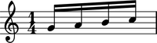
abjad> container = t + u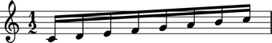
__contains__(expr)
Public method defined here.
Return True when self contains expr, otherwise False.
abjad> container = Container([Note(x, (1, 16)) for x in [0, 2, 4, 5]])

abjad> note = container[1]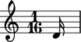
abjad> note in container True
__delitem__(i)
Public method defined here.
Delete elements at index or slice i from self.
abjad> container = Container([Note(x, (1, 16)) for x in [0, 2, 4, 5]])

abjad> del container[1:3]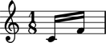
__getitem__(i)
Public method defined here.
Return element at index i in self.
Works with positive indices, negative indices, and slices.
__getitem__(name)
Public method defined here.
Return element in self with name equal to name.
abjad> container = Container([Note(x, (1, 16)) for x in [0, 2, 4, 5]])

abjad> note = container[0]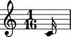
abjad> container[-1].name = 'last' abjad> note = container['last']

abjad> container = Container([Note(x, (1, 16)) for x in [0, 2, 4, 5]])

abjad> container *= 3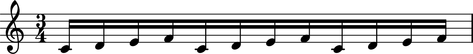
__len__( )
Public method defined here.
Return the number of elements in self as a nonnegative integer.
abjad> container = Container([Note(x, (1, 16)) for x in [0, 2, 4, 5]])

abjad> len(container) 4
abjad> container = Container([Note(x, (1, 16)) for x in [0, 2, 4, 5]])
abjad> container = Container([Note(x, (1, 16)) for x in [0, 2, 4, 5]]) abjad> container * 3 [(c'16, d'16, e'16, f'16), (c'16, d'16, e'16, f'16), (c'16, d'16, e'16, f'16)]
__repr__( )
Public method defined here.
Return string representation of self fit for interpreter display.
abjad> container = Container([Note(x, (1, 16)) for x in [0, 2, 4, 5]])

abjad> container (c'16, d'16, e'16, f'16)
abjad> container = Container([Note(x, (1, 16)) for x in [0, 2, 4, 5]])

abjad> container = Container([Note(x, (1, 16)) for x in [0, 2, 4, 5]]) abjad> 3 * container [(c'16, d'16, e'16, f'16), (c'16, d'16, e'16, f'16), (c'16, d'16, e'16, f'16)]
__setitem__(i, expr)
Public method defined here.
Assign expr to index i in self.
Works with positive indices, negative indices, and slices.
abjad> container = Container([Note(x, (1, 16)) for x in [0, 2, 4, 5]])

abjad> container[1] = Note(10, (1, 16))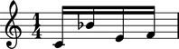
abjad> container[1:3] = Note(7, (1, 16)) * 4
See the
Containerclass incontainers/container.pyfor implementation details.